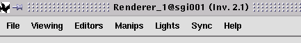

(Renderer) Menu
Bar
Note:
| Menu Bar (plus information
area, tool bar, and wheels) will disappear if you set 'Decoration off'
in the Viewer Popup Menu (menu Covise
Renderer) |

The Menu
Bar provides the following functions:
-
File:
save/print or restore the current scene
-
Viewing:
adjust viewing parameters
-
Editors:
edit geometry objects/select options for interactors
-
Manips:
select manipulators
-
Lights:
change light properties
-
Sync:
modify the way of collaboration
-
Help:
get help (online help, or detailed info via User's Guide) for the IV Renderer
Telepointer
As additional feature
for collaboration, the Renderer provides the Telepointer
The Telepointer allows
you to point to all renderer windows.